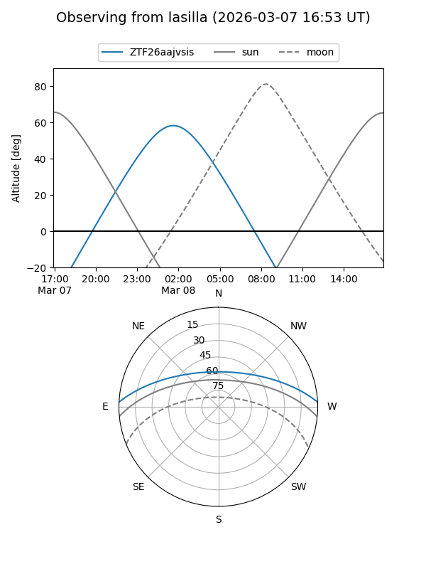
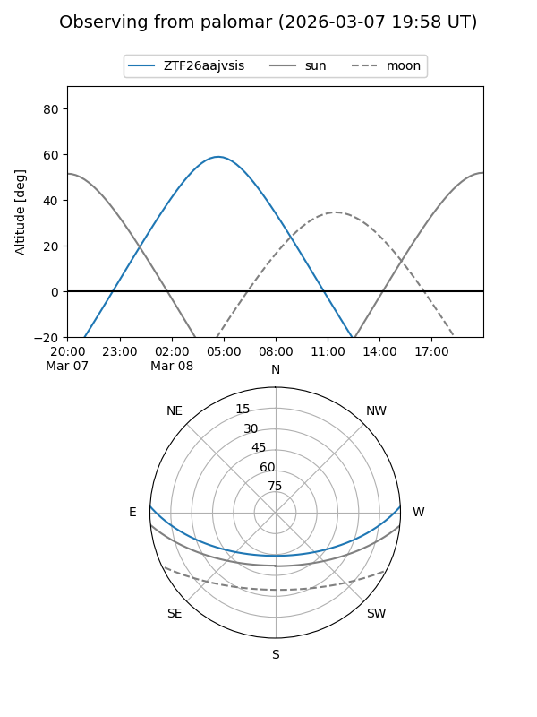

ZTF26aajvsis
Target ZTF26aajvsis at 2026-03-08 04:54
Aliases and brokers:
FINK: link
Lasair: link
ALeRCE: link
alt names
ZTF26aajvsis (ztf,fink_ztf)
Coordinates:
equatorial (ra, dec) = 119.0901,+2.45713
equatorial (HMS+DMS) = 07:56:21.62,+02:27:25.68
galactic (l, b) = (218.2431,+15.54978)
Flags:
Photometry:
last ztfg=19.51
1 ztfg detections
Lightcurve
Visibility


Additional plots